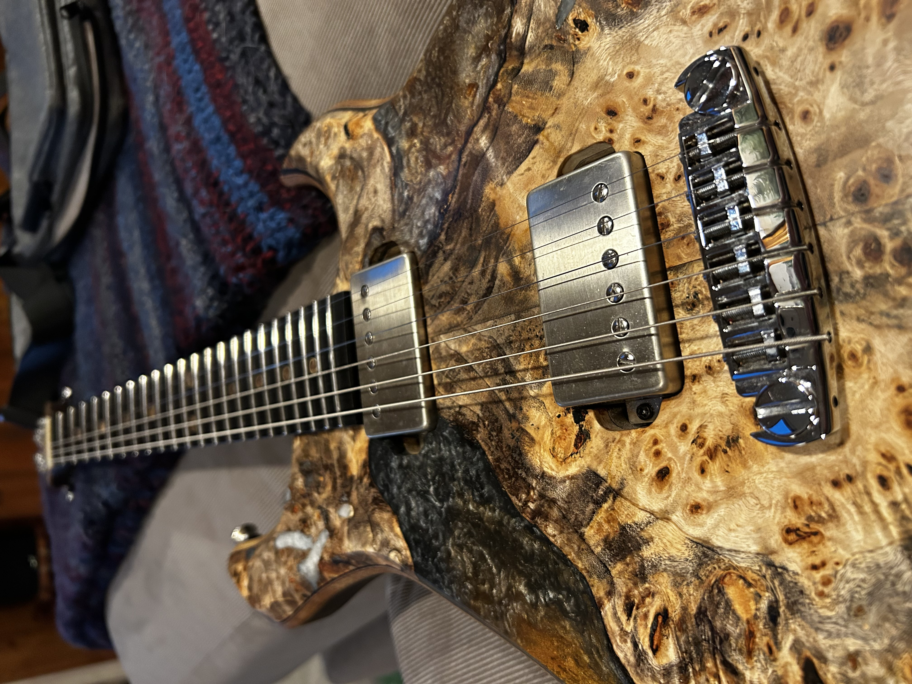
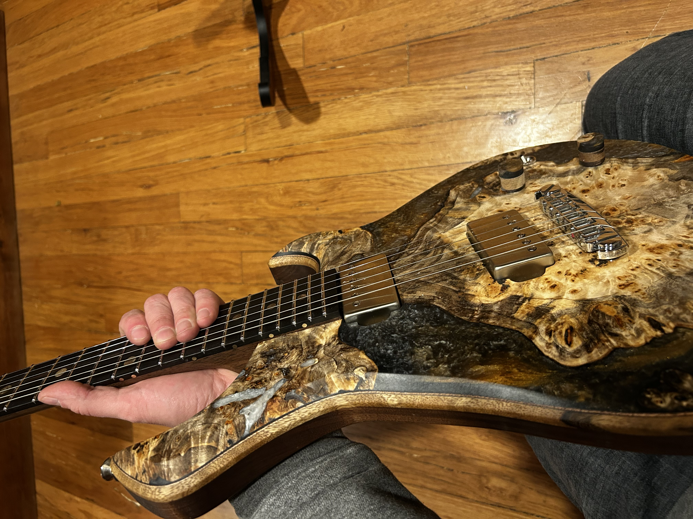
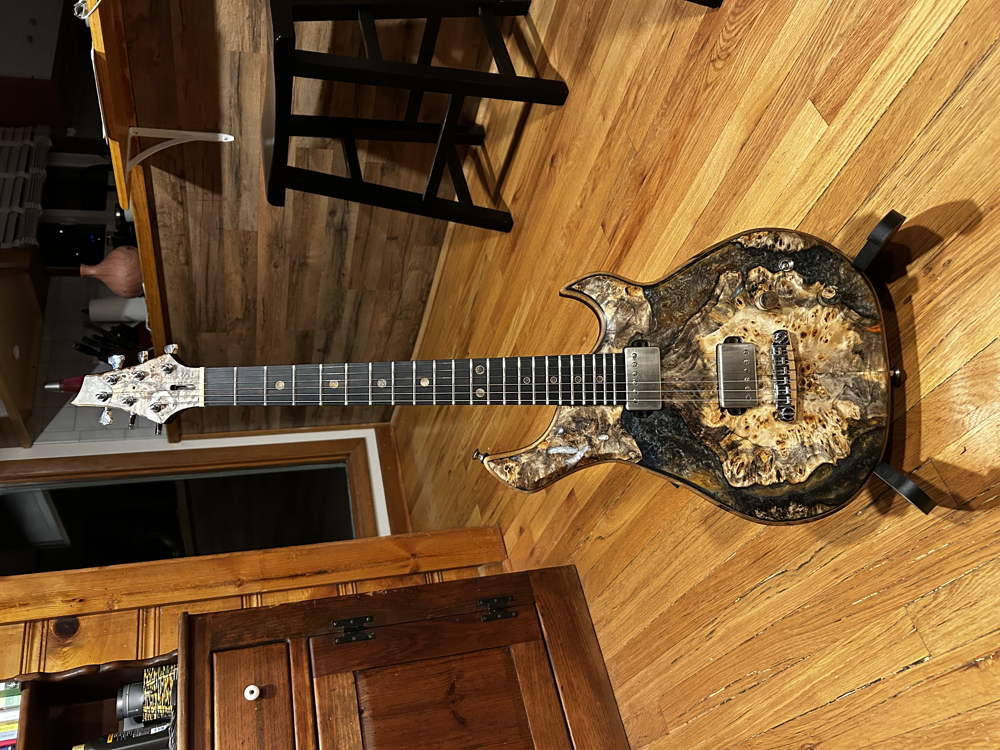
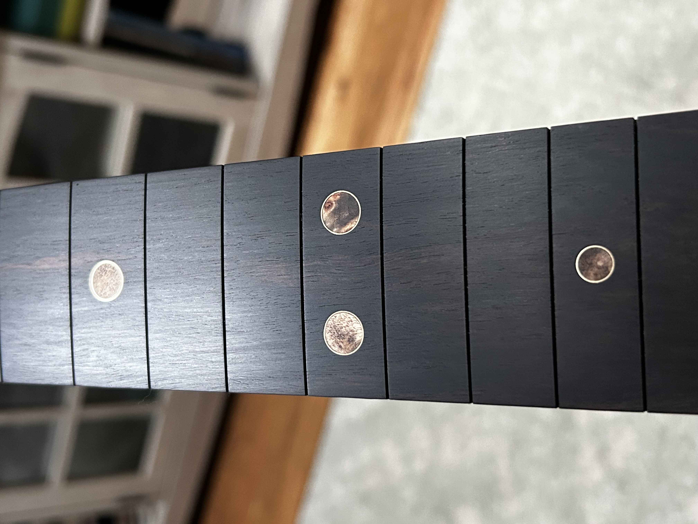
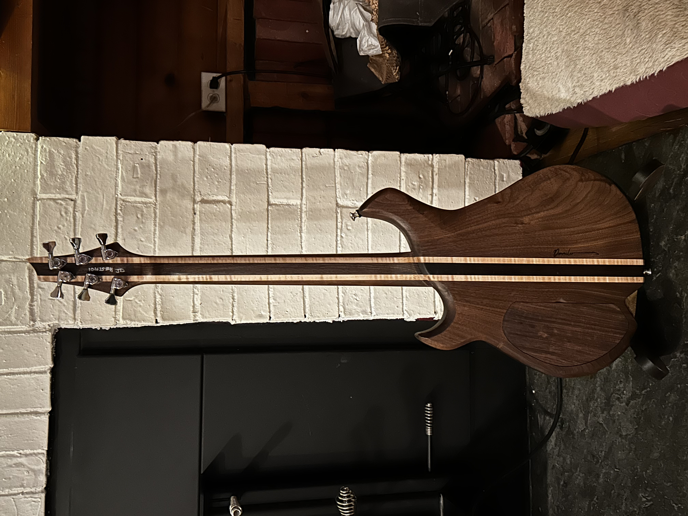

Dorweiler custom build
Features a burl resin top with laminated walnut/wenge/maple back, Macassar ebony fretboard with brass and burl inlays, and Seymour Duncan JB/Jazz pickups. 24.75" scale with Schaller wraparound bridge.
This build started with a piece of burl that was too wild and figured to use as solid wood - it would have been structurally unstable. So I stabilized it in resin and used it as the top, creating this almost sculptural surface. The contrast with the laminated walnut/wenge/maple back is deliberate: organic chaos on top, precise geometry on the back. I carried that theme through with brass-and-burl fretboard inlays, and even cut the knobs from body offcuts to maintain material continuity. The Seymour Duncan JB/Jazz pairing is classic for a reason - versatile, balanced, and perfect for the 24.75" scale. This one feels like half natural artwork, half precision instrument.
Get in touch to find out about the current availability of this instrument.
Get In Touch